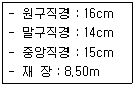
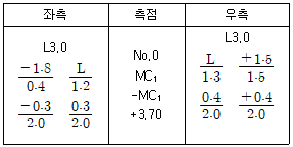

산림기사 (2018-04-28 기출문제)
1과목: 조림학
1. 인공조림과 비교한 천연갱신에 대한 설명으로 옳은 것은?
- 순림의 조성이 쉽다.
- 동령림의 조성이 잘 된다.
- 초기 노동인력이 많이 필요하다.
- 생태적으로 보다 안정된 임분을 조성할 수 있다.
(정답률: 89%)

2. 자엽 내에 저장물질을 가지고 있거나 배유가 전혀 없는 무배유종자에 해당하는 것은?
- 소나무
- 전나무
- 물푸레나무
- 아까시나무
(정답률: 50%)
3. 종자의 저장 수명이 가장 긴 수종은?
- Salix koreensis
- Quercus variabilis
- Robirda pseudoacacia
- Cryptomeria japonica
(정답률: 43%)
4. 삽목상의 환경조건에 대한 설명으로 옳지 않은 것은?
- 통기성이 좋아야 한다.
- 해가림을 하여 건조를 막는다.
- 온도는 10~15℃가 가장 적합하다.
- 삽수에 적절한 수분을 공급하여야 한다.
(정답률: 79%)
5. 수목 체내에서 이동이 어렵고 결핍증상이 어린잎에서 먼저 나타나는 무기원소는?
- 칼슘
- 질소
- 인산
- 칼륨
(정답률: 75%)
6. 간벌의 효과가 아닌 것은?
- 목재의 형질 향상
- 임목의 초살도 감소
- 산불의 위험성 감소
- 벌기수확이 양적 및 질적으로 증가
(정답률: 72%)
7. 수목 내에서 물의 주요 기능이 아닌 것은?
- 원형질의 구성성분이다.
- 세포의 팽압을 유지한다.
- 엽록소를 구성하고 동화작용을 한다.
- 여러 대사물질을 다른 곳으로 운반시키는 운반체이다.
(정답률: 78%)
8. 식재 조림을 위한 묘목의 선정과 관리에 대한 설명로 옳지 않은 것은?
- 악취가 나는 묘목은 조림 대상에서 제외한다.
- 묘목은 약간 건조한 상태에서 저장하여야 한다.
- 묘목의 뿌리나 줄기를 손톱이나 칼로 약간 벗겨보면 습기가 있고 백색으로 윤기가 돌아야 한다.
- 묘목의 동아가 자라지 않고 단단하여야 하며 흰색의 세근이 4~5mm 이상 자라지 않은 상태여야 한다.
(정답률: 79%)
9. 풀베기 작업을 시행하기에 가장 적절한 시기는?
- 3월 상순~5월 하순
- 3월 하순~5월 하순
- 6월 상순~8월 상순
- 8월 하순~10월 상순
(정답률: 86%)
10. 토양산도와 수목의 상호관계에 대한 설명으로 옳은 것은?
- 일본잎갈나무는 알칼리성 토양에서 가장 잘 자란다.
- 철은 산성 토양에서 결핍현상이 자주 발생한다.
- 참나무류, 단풍나무류, 피나무류 등은 pH 5.5~6.5에서 양호한 생장을 보인다.
- 묘포의 토양산도가 pH 4.5 이하의 강산성을 보일 경우에는 모잘록병이 자주 발생한다.
(정답률: 68%)
11. 우리나라 난대림에 대한 설명으로 옳지 않은 것은?
- 제주도는 난대림만 존재한다.
- 특징 임상은 상록활엽수림이다.
- 연평균 기온이 14℃ 이상의 지역이다.
- 우리나라 산림대 중에 가장 적은 면적을 차지한다.
(정답률: 83%)
12. 잎이 5개씩 모여서 나는 것은?
- Pinas rigida
- Pinus parviflora
- Pinus bungeana
- Pinus thunbergii
(정답률: 54%)
13. 동일 임분에서 대경목을 지속적으로 생산할 수 있는 작업종은?
- 택벌작업
- 개벌작업
- 산벌작업
- 제벌작업
(정답률: 79%)
14. 묘목의 가식에 대한 설명으로 옳지 않은 것은?
- 산지 가식은 조림지 근처에 한다.
- 가식지 주변에 배수로를 만들어 준다.
- 일반적으로 45° 정도 경사지게 가식한다.
- 비가 오거나 또는 비가 온 후에는 수분이 충분하므로 즉시 가식한다.
(정답률: 78%)
15. 테트라졸륨 용액을 이용한 종자 활력검사에 대한 설명으로 옳지 않은 것은?
- 휴면종자에도 잘 나타난다.
- 테트라졸륨 용액은 어두운 곳에 보관한다.
- 침엽수의 종자는 배와 배유가 함께 염색되도록 한다.
- 활력이 없는 종자의 조직을 접촉시키면 붉은색으로 변한다.
(정답률: 74%)
16. 열대우림에 대한 설명으로 옳지 않은 것은?
- 동식물의 종다양성이 높다.
- 낙엽의 분해가 빨라서 1차생산성이 낮다.
- 연중 비가 내리는 열대우림에는 상록활엽수가 우점한다.
- 토양은 화학적 풍화가 빠르고 수용성물질의 용탈이 심하다.
(정답률: 80%)
17. 맹아갱신을 적용하는 작업종이 아닌 것은?
- 모수작업
- 왜림작업
- 중림작업
- 두목작업
(정답률: 64%)
18. 옥신의 효과로 옳지 않은 것은?
- 종자 휴면 유도
- 정아 우세 현상
- 뿌리의 생장 촉진
- 고농도에서 제초제의 역할
(정답률: 73%)
19. 겉씨식물의 특성으로 옳은 것은?
- 중복수정을 한다.
- 헛물관 세포가 있다.
- 대부분 잎은 그물맥이다.
- 밑씨가 씨방 속에 들어 있다.
(정답률: 59%)
20. 어린나무 가꾸기 작업에 대한 설명으로 옳지 않은 것은?
- 임분 전체의 형질 향상이 목적이다.
- 목적하는 수종의 완전한 생장과 건전한 자람을 도모한다.
- 조림목이 임관을 형성한 후부터 간벌 시기 이전에 시행한다.
- 하목의 수광량을 감소시켜 불필요한 수목 및 잡초의 생장을 지연시킨다.
(정답률: 74%)
2과목: 산림보호학
21. 다음 중 대기오염에 가장 강한 수종은?
- 소나무
- 전나무
- 은행나무
- 느티나무
(정답률: 82%)
22. 솔잎혹파리가 월동하는 형태는?
- 알
- 유충
- 성충
- 번데기
(정답률: 77%)
23. 파이토플라스마로 인한 수목병 방제에 가장 효과적인 것은?
- 알콜
- 페니실린
- 스트렙토마이신
- 테트라사이클린
(정답률: 84%)
24. 식엽성 해충이 아닌 것은?
- 대벌레
- 미국흰불나방
- 소나무순나방
- 참나무재주나방
(정답률: 55%)
25. 나무좀, 하늘소, 바구미 등은 쇠 약목에 모이는 습성을 이용한 것으로, 벌목한 통나무 등을 이용하여 해충을 방제하는 방법은?
- 식이 유살법
- 등화 유살법
- 잠복장소 유살법
- 번식장소 유살법
(정답률: 75%)
26. 볕데기 피해를 입기 쉬운 수종으로 가장 거리가 먼 것은?
- 굴참나무
- 소태나무
- 버즘나무
- 오동나무
(정답률: 66%)
27. 수목의 그을음병에 대한 방제 방법으로 가장 거리가 먼 것은?
- 통풍과 채광을 높인다.
- 흡즙성 곤충을 방제한다.
- 잎 표면을 깨끗이 닦아낸다.
- 질소질 비료를 표준사용량보다 더 사용한다.
(정답률: 83%)
28. 소나무 또는 잣나무에 발생하는 잎떨림병을 방제하는 방법으로 옳지 않은 것은?
- 병든 낙엽을 모아 태운다.
- 풀베기와 가지치기를 실시하지 않는다.
- 여러 종류의 활엽수를 하목으로 심는다.
- 포자가 비산하는 7~9월에 약제를 살포한다.
(정답률: 77%)
29. 밤나무혹벌의 천적으로 옳은 것은?
- 알좀벌
- 먹좀벌
- 남색긴꼬리좀벌
- 수중다리무늬벌
(정답률: 75%)
30. 주로 목재를 가해하는 해충은?
- 밤바구미
- 거세미나방
- 가루나무좀
- 느티나무벼룩바구미
(정답률: 82%)
31. 흰가루병에 걸린 병환부 위에 가을철에 나타나는 흑색의 알갱이는?
- 자낭구
- 포자각
- 병자각
- 분생자병
(정답률: 66%)
32. 수목병을 일으키는 바이러스의 특징으로 옳지 않은 것은?
- 병원체가 자력으로 기주에 침입하지 못한다.
- 기주세포의 내용물과 구분하는 2중막이 존재한다.
- 병원체는 전자현미경을 통해서만 관찰이 가능하다.
- 병원체는 살아있는 세포 내에서만 증식이 가능하다.
(정답률: 63%)
33. 묘포지에서 2~3년간 윤작을 하여 피해를 크게 경감시킬 수 있는 수목병은?
- 흰비단병
- 오동나무 탄저병
- 자줏빛날개무늬병
- 침엽수의 모잘록병
(정답률: 59%)
34. 녹병균의 생활환에 해당하는 포자가 아닌 것은?
- 녹포자
- 녹병정자
- 여름포자
- 분생포자
(정답률: 56%)
35. 생물학적 방제에 대한 설명으로 옳은 것은?
- 내충성 품종을 심어 해충의 발생을 억제시키는 방법이다.
- 병원미생물이나 호르몬 약제를 이용하여 해충을 방제하는 방법이다.
- 포식충，기생곤충, 병원미생물 등을 이용하여 해충의 발생을 억제시키는 방법이다.
- 포식충, 기생곤충 등에 의해 해충의 발생을 억제시키는 방법이며 병원미생물은 제외된다.
(정답률: 71%)
36. 소나무 혹병의 중간기주는?
- 송이풀
- 향나무
- 뱀고사리
- 참나무류
(정답률: 70%)
37. 산불로 인한 피해에 대한 설명으로 옳지 않은 것은?
- 일반적으로 침엽수는 활엽수에 비하여 산불 피해에 약한 편이다.
- 일반적으로 상록활엽수는 낙엽활엽수보다 산불 피해에 약한 편이다.
- 활엽수 중에서 녹나무, 벚나무는 동백나무, 참나무류보다 산불 피해에 약한 편이다.
- 침엽수 중에서 가문비나무, 은행나무는 소나무, 곰솔보다 산불 피해에 강한 편이다.
(정답률: 69%)
38. 국외로부터 국내에 침입한 해충이 아닌 것은?
- 솔나방
- 솔잎혹파리
- 미국흰불나방
- 버즘나무방패벌레
(정답률: 67%)
39. 배설물을 종실 밖으로 배출하지 않아 외견상으로 식별이 어려운 해충은?
- 밤바구미
- 복숭아명나방
- 솔알락명나방
- 도토리거위벌레
(정답률: 76%)
40. 농약의 효력을 충분히 발휘하도록 첨가하는 물질은?
- 보조제
- 훈증제
- 유인제
- 기피제
(정답률: 82%)
3과목: 임업경영학
41. 어느 법정림의 춘계축적이 900m3, 추계축적이 1100m3라 할 때 법정축적은?
- 900m3
- 1000m3
- 1100m3
- 2000m3
(정답률: 73%)
42. 지위지수에 대한 설명으로 옳지 않은 것은?
- 임지의 생산능력을 나타낸다.
- 우세목의 수고는 밀도의 영향을 많이 받는다.
- 지위지수 분류표 및 곡선은 동형법 또는 이형법으로 제작할 수 있다.
- 우리나라에서는 보통 임령 20년 또는 30년일 때 우세목의 수고를 지위지수로 하고 있다.
(정답률: 55%)
43. 자연휴양림 지정을 위한 타당성평가 기준이 아닌 것은?
- 경관
- 면적
- 위치
- 활용여건
(정답률: 49%)
44. 수간석해를 통해 총 재적을 구할 때 합산하지 않아도 되는 것은?
- 근주재적
- 지조재적
- 결정간재적
- 초단부재적
(정답률: 70%)
45. 임업이율이 보통이율보다 낮게 평정되는 이유로 옳지 않은 것은?
- 생산기간의 장기성
- 산림소유의 안정성
- 산림재산의 유동성
- 산림 관리경영의 복잡성
(정답률: 60%)
46. 윤벌기에 대한 설명으로 옳지 않은 것은?
- 택벌작업에 따른 법정림의 개념이다.
- 임목의 생산기간과는 일치하지 않는다.
- 작업급의 법정영급분배를 예측하는 기준이다.
- 작업급의 모든 임목을 일순벌하는데 소요되는 기간이다.
(정답률: 53%)
47. 유형고정자산의 감가 중에서 기능적 요인에 의한 감가에 해당되지 않는 것은?
- 부적응에 의한 감가
- 진부화에 의한 감가
- 경제적 요인에 의한 감가
- 마찰 및 부식에 의한 감가
(정답률: 60%)
48. 임업소득에 작용하는 생산요소에 포함되지 않은 것은?
- 임지
- 자본
- 노동
- 보속성
(정답률: 77%)
49. 유동 자본재에 속하는 것은?
- 임도
- 기계
- 묘목
- 저목장
(정답률: 81%)
50. 임지기망가가 최대치에 도달하는 시기에 대한 설명으로 옳은 것은?
- 이율이 낮을수록 빨리 나타난다.
- 채취비가 클수록 빨리 나타난다.
- 조림비가 클수록 늦게 나타난다.
- 간벌수확이 적을수록 빨리 나타난다.
(정답률: 67%)
51. 법정림에서 법정벌재량과 의미가 다른 것은?
- 법정수확률
- 법정연벌량
- 법정생장량
- 벌기평균생장량×윤벌기
(정답률: 47%)
52. 임업의 특성으로 옳지 않은 것은?
- 임업생산은 노동집약적이다.
- 육성임업과 채취임업이 병존한다.
- 임업노동은 계절적 제약을 크게 받지 않는다.
- 원목가격의 구성요소 중 운반비가 차지하는비율이 가장 낮다.
(정답률: 75%)
53. 임업투자 결정과정의 순서로 옳은 것은?
- 투자사업 모색→현금흐름 추정→투자사업의 경제성 평가→투자사업 재평가→투자사업 수행
- 현금흐름 추정→투자사업의 경제성 평가→투자사업 모색→투자사업 수행→투자사업 재평가
- 투자사업 모색→현금흐름 추정→투자사업의 경제성 평가→투자사업 수행→투자사업 재평가
- 현금흐름 추정→투자사업 모색→투자사업의 경제성 평가→투자사업 수행→투자사업 재평가
(정답률: 68%)
54. 표준목법에 의한 임분 재적 측정 방법으로，전 임목을 몇 개의 계급으로 나누고 각 계급의 본수를 동일하게 하여 표준목을 선정하는 것은?
- 단급법
- Urich법
- Hartig법
- Draudt법
(정답률: 75%)
55. 임목의 평가방법에 대한 분류방식으로 옳지 않은 것은?
- 비교방식 - Glaser법
- 수익방식 - 기망가법
- 원가방식 - 비용가법
- 원가수익절충방식 - 임지기망가법응용법
(정답률: 60%)
56. 우리나라에서 통나무의 재적을 구하는데 이용되는 재적검량방법에 의해 계산한 벌채목의 재적(m3)은?

- 0.099
- 0.167
- 0.198
- 0.218
(정답률: 46%)
57. 임도 개설을 위하여 투자한 굴삭기의 비용이 3000만원，수명은 5년, 폐기 이후의 잔존가치는 없다고 한다. 이 투자에 의하여 5년 동안 해마다 720만원의 순이익이 있다면 비율이 가장 낮다. 투자이익률은? (단, 감각상각비 계산은 정액법을 적용)
- 36%
- 48%
- 64%
- 7%
(정답률: 55%)
58. 산림보호법에서 규정한 산림보호구역의 종류가 아닌 것은?
- 생활환경보호구역
- 재해방지보호구역
- 백두대간보호구역
- 산림유전자원보호구역
(정답률: 69%)
59. 자연휴양림의 공익적 효용을 직접효과와 간접효과로 구분할 때 간접효과에 해당되는 것은?
- 대기정화기능
- 건강증진효과
- 정서함양효과
- 레크레이션효과
(정답률: 72%)
60. 단목의 연령측정 방법이 아닌 것은?
- 목측에 의한 방법
- 지절에 의한 방법
- 방위에 의한 방법
- 생장추에 의한 방법
(정답률: 67%)
4과목: 임도공학
61. 임도의 노면침하를 방지하기 위하여 저습지대에 시설하는 것은?
- 토사도
- 사리도
- 쇄석도
- 통나무길
(정답률: 77%)
62. 임도 구조물 시공 시 기초공사의 종류가 아닌 것은?
- 전면기초
- 말뚝기초
- 고정기초
- 깊은기초
(정답률: 64%)
63. 임도의 노체와 노면에 대한 설명으로 옳지 않은 것은?
- 사리도는 노면을 자갈로 깔아 놓은 임도이다.
- 토사도는 배수 문제가 적어 가장 많이 사용된다.
- 노체는 노상，노반, 기층, 표층으로 구성되는 것이 일반적이다.
- 노상은 다른 층에 비해 작은 응력을 받으므로 특별히 부적당한 재료가 아니면 현장 재료를 사용한다.
(정답률: 69%)
64. 횡단면 A1, A2, A3의 면적은 각각 5m2, 7m2, 9m2이고, A1와 A2의 거리는 10m, A2와 A3의 거리는 15m이다. 양단면적평균법에 의한 3단면 사이의 총토적량(m3)은?
- 100
- 150
- 180
- 200
(정답률: 69%)
65. 사리도의 유지보수에 대한 설명으로 옳지 않은 것은?
- 방진처리를 위하여 물, 염화칼슘 등이 사용된다.
- 횡단기울기를 10～15% 정도로 하여 노면 배수가 양호하도록 한다.
- 노면의 정지작업은 가급적 비가 온 후 습윤한 상태에서 실시하는 것이 좋다.
- 길어깨가 높아져 배수가 불량할 경우 그레이더로 정형하고 롤러로 다진다.
(정답률: 62%)
66. 임도망 배치 시 산정 림 개발에 가장 적합한 노선은?
- 비교 노선
- 순환식 노선
- 대각선방식 노선
- 지그재그방식 노선
(정답률: 64%)
67. 임도의 대피소 간격 설치 기준은?
- 300m 이내
- 400m 이내
- 500m 이내
- 1000m 이내
(정답률: 80%)
68. 구릉지대에서 지선임도밀도가 20m/ha이고，임도효율이 5일 때 평균집재거리는?
- 4m
- 100m
- 250m
- 400m
(정답률: 33%)
69. 임도 설계 업무의 순서로 옳은 것은?
- 예비조사 → 답사 → 예측 → 실측 → 설계서 작성
- 예비조사 → 예측 → 답사 → 실측 → 설계서 작성
- 예측 → 예비조사 → 답사 → 실측 → 설계서 작성
- 답사 예비조사 → 예측 → 실측 → 설계서 작성
(정답률: 78%)
70. 임도의 횡단면도상 각 측점의 단면마다 표기하지 않아도 되는 것은?
- 사면보호공 물량
- 지장목 제거 물량
- 지반고 및 계획고
- 곡선제원 및 교각점
(정답률: 51%)
71. 반출할 목재의 길이가 16m, 도로의 폭이 8m일 때 최소곡선반지름은?
- 8m
- 14m
- 16m
- 32m
(정답률: 63%)
72. 임지와 잔존목의 훼손을 가장 최소화할 수 있는 가선집재 시스템은?
- 타일러식 시스템
- 단선순환식 시스템
- 하이리드식 시스템
- 호이스트캐리지식 시스템
(정답률: 60%)
73. 평판측량에서 사용되지 않는 방법은?
- 전진법
- 교회법
- 방사법
- 방향각법
(정답률: 57%)
74. 다음 표는 임도의 횡단측량 야장이다. A, B, C, D에 대한 설명으로 옳지 않은 것은?

- A：측점이 No.0인 경우는 기설노면을 의미한다.
- B：분자는 고저차로서 ＋는 성토량, －는 절토량을 의미한다.
- C：분모는 수평거리로서 측점을 기준으로 왼편 1.2m 지점을 의미한다.
- D : MC 지점으로부터 3.70m 전진한 지점을 뜻한다.
(정답률: 59%)
75. 가선집재와 비교하여 트랙터를 이용한 집재작업의 특징으로 거리가 먼 것은?
- 기동성이 높다.
- 작업이 단순하다.
- 임지 훼손이 적다.
- 경사도가 높은 곳에서 작업이 불가능하다.
(정답률: 83%)
76. 설계속도가 40km/시간인 특수지형에서의 임도에 대한 종단기울기 기준은?
- 3% 이하
- 6% 이하
- 8% 이하
- 10% 이하
(정답률: 58%)
77. 흙의I 기본성질에 대한 설명으로 옳지 않은?
- 공극비는 흙 입자의 용적에 대한 공극의 용적비이다.
- 포화도는 흙 입자의 중량에 대한 수분의 중량비를 백분율로 표시한 것이다.
- 공극률은 흙덩이 전체의 용적에 대한 간극의 용적비를 백분율로 표시한 것이다.
- 무기질의 흙덩이는 고체(흙 입자), 액체(물)，기체(공기)의 세 가지 성분으로 구성된다.
(정답률: 59%)
78. 방위각 135°35ʹ의 역방위각은?
- 44°25ʹ
- 135°35ʹ
- 224°25ʹ
- 315°35ʹ
(정답률: 71%)
79. 임도 설계 시 종단 기울기에 대한 설명으로 옳은 것은?
- 종단기울기를 급하게 하면 임도우회율을 낮출 수 있다.
- 종단기울기의 계획은 설계차량의 규격과 관계가 없다.
- 종단기울기는 완만한 것이 좋기 때문에 0%를 유지하는 것이 좋다.
- 종단기울기는 시공 후 임도의 개・보수를 통하여 손쉽게 변경할 수 있다.
(정답률: 71%)
80. 임도의 평면선형이 영향을 주는 요소로 가장 거리가 먼 것은?
- 주행속도
- 운재능력
- 노면배수
- 교통차량의 안전성
(정답률: 50%)
5과목: 사방공학
81. 산지의 침식형태 중 중력에 의한 침식으로 옳지 않은 것은?
- 산붕
- 포락
- 산사태
- 사구침식
(정답률: 77%)
82. 비탈면에 시공하는 옹벽의 안정조건이 아닌 것은?
- 전도에 대한 안정
- 침수에 대한 안정
- 활동에 대한 안정
- 침하에 대한 안정
(정답률: 68%)
83. 집수량이 많아 침식 위험이 높은 산비탈에 설치하는 수로로 가장 적당한 것은?
- 흙수로
- 바자수로
- 떼붙임수로
- 찰붙임수로
(정답률: 65%)
84. 비중이 2.50 이하인 골재는?
- 잔골재
- 보통골재
- 중량골재
- 경량골재
(정답률: 60%)
85. 콘크리트 배합에서 시멘트 사용량이 가장 많은 것은?
- 1：2：2
- 1：2：4
- 1：3：3
- 1：3：6
(정답률: 62%)
86. 토질이 모래층인 절토사면에 대한 설명으로 옳지 않은 것은?
- 새집공법을 적용하는 것이 가장 적합하다.
- 토양유실을 방지할 목적으로 전면적 객토를 해주어야 한다.
- 침식에 대단히 약하여 식생이 착근하기 전에 유실될 가능성이 높다.
- 절토공사 직후에는 단단한 편이나 건조하면 푸석푸석 해지고 무너지기 쉽다.
(정답률: 74%)
87. 폭 15m, 높이 2m인 직사각형 수로에서 수심 1m, 평균유속 2m/s로 흐르고 있을 때 유량은?
- 15m3/s
- 30m3/s
- 60m3/s
- 80m3/s
(정답률: 61%)
88. 유역 평균강수량을 산정하는 방법이 아닌 것은?
- 물수지법
- 등우선법
- 산술평균법
- Thiessen법
(정답률: 59%)
89. 유동형 침식의 하나인 토석류에 대한 설명으로 옳은 것은?
- 토괴의 흐트러짐이 적다.
- 주로 점성토의 미끄럼면에서 미끄러진다.
- 일반적으로 움직이는 속도가 0.01~10mm/day 이다.
- 물을 윤활제로 하여 집합운반의 형태를 가진다.
(정답률: 57%)
90. 야계사방의 주요 목적으로 거리가 먼 것은?
- 계안의 침식 방지
- 계류의 바닥 안정
- 계류의 토사유출 억제
- 붕괴지의 인공적인 복구
(정답률: 73%)
91. 계단 연장이 3km인 비탈면에 선떼붙이기를 7급으로 할 때에 필요한 떼의 총 소요 매수는? (단, 떼의 크기：40cm×25cm)
- 11,250매
- 15,000매
- 16,500매
- 18,750매
(정답률: 66%)
92. 붕괴형 산사태에 대한 설명으로 옳은 것은?
- 지하수로 인해 발생하는 경우가 많다.
- 파쇄대 또는 온천지대에서 많이 발생한다.
- 이동면적이 lha 이하가 많고，깊이도 수 m 이하가 많다.
- 속도는 완만해서 토괴는 교란되지 않고 원형을 유지한다.
(정답률: 61%)
93. 수평분력의 총합과 수직분력의 총합，제저와 기초지반과의 마찰계수를 이용하여 계산하는 중력식 사방댐의 안정조건은?
- 전도에 대한 안정
- 활동에 대한 안정
- 제체의 파괴에 대한 안정
- 기초지반의 지지력에 대한 안정
(정답률: 46%)
94. 사방댐과 골막이에 모두 축설하는 것은?
- 앞댐
- 방수로
- 반수면
- 대수면
(정답률: 69%)
95. 콘크리트흙막이 공작물 시공방법으로 옳지 않은 것은?
- 물빼기구멍은 지름 5～10cm 정도의 관을 2～3m2당 1개소를 설치한다.
- 견고하지 않은 지반에 시공하는 경우 반드시 말뚝기초 등으로 보강해야 한다.
- 뒤채움돌은 시공의 난이도 및 배수효과 등을 고려하여 위아래 모두 20cm 내외로 한다.
- 비탈면의 토층이 이동할 위험이 있고, 토압이 커서 다른 흙막이 공작물로는 안정을 기대하기 어려운 경우 설치한다.
(정답률: 60%)
96. 최대홍수유량을 계산하려 할 때 필요한 인자가 아닌 것은?
- 유거계수
- 최대시우량
- 안정기울기
- 집수구역의 면적
(정답률: 70%)
97. 정사울타리에 대한 설명으로 옳지 않은 것은?
- 높이는 60～70cm를 표준으로 한다.
- 방향은 주풍방향에 직각이 되도록 한다.
- 정사각형이나 직사각형 모양으로 구획한다.
- 구획 내부에 ha당 10,000본의 곰솔 등의 묘목을 식재한다.
(정답률: 62%)
98. 사방사업 대상지로 가장 거리가 먼 것은?
- 임도가 미개설되어 접근이 어려운 지역
- 산불 등으로 산지의 피복이 훼손된 지역
- 황폐가 예상되는 산지와 계천으로 복구공사가 필요한 지역
- 해일 및 풍랑 등 재해예방을 위해 해안림 조성이 필요한 지역
(정답률: 75%)
99. 황폐계류의 특성으로 옳지 않은 것은?
- 호우가 끝나면 유량이 급감한다.
- 호우에도 모래나 자갈의 이동은 거의 없다.
- 유량은 강수에 의해 급격히 증가하거나 감소한다.
- 유로의 연장이 비교적 짧으며 계상기울기가 급하다.
(정답률: 77%)
100. 비탈다듬기나 단끊기로 생긴 뜬흙의 활동을 방지하기 위해 계곡부에 설치하는 공작물은?
- 조공
- 누구막이
- 땅속흙막이
- 산비탈흙막이
(정답률: 70%)